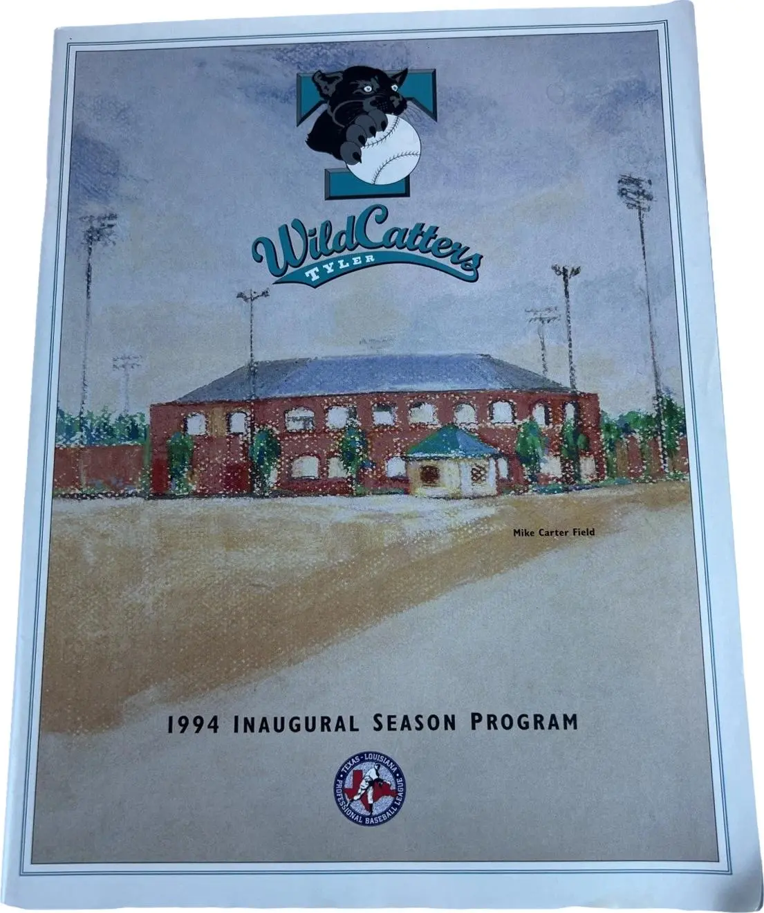
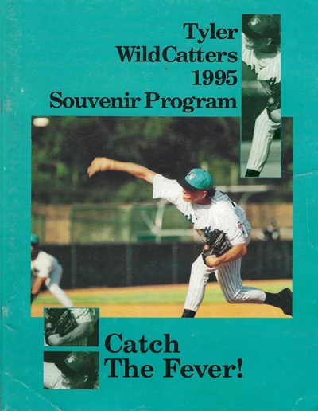
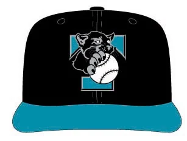
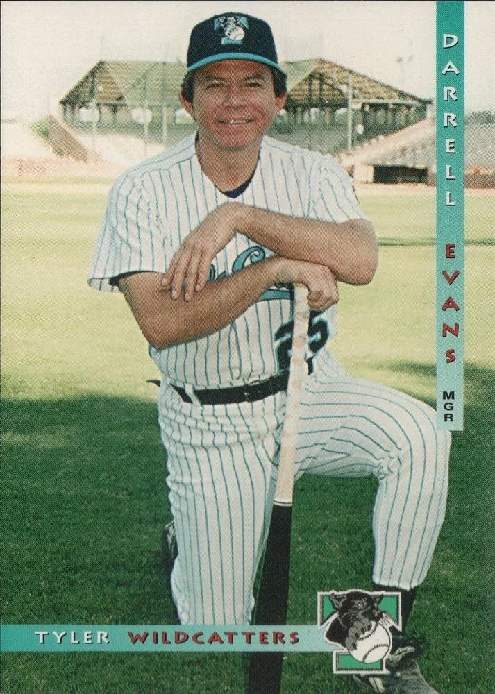
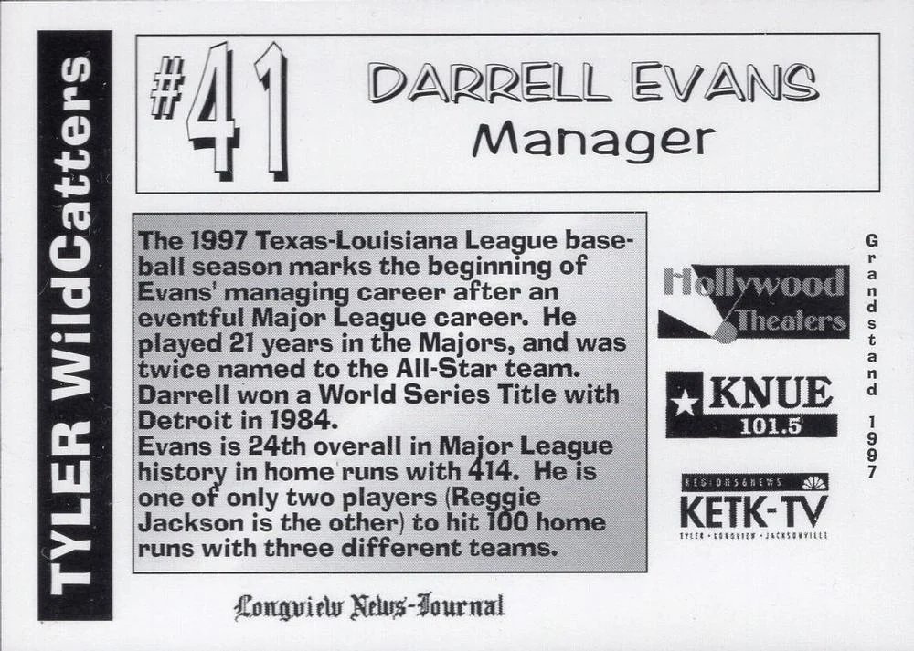
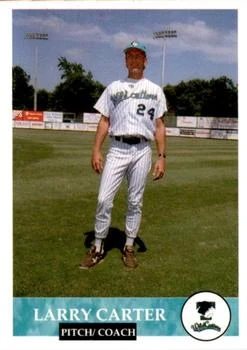
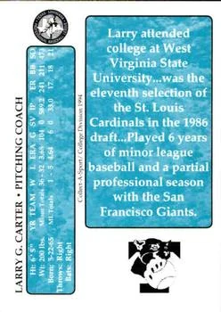
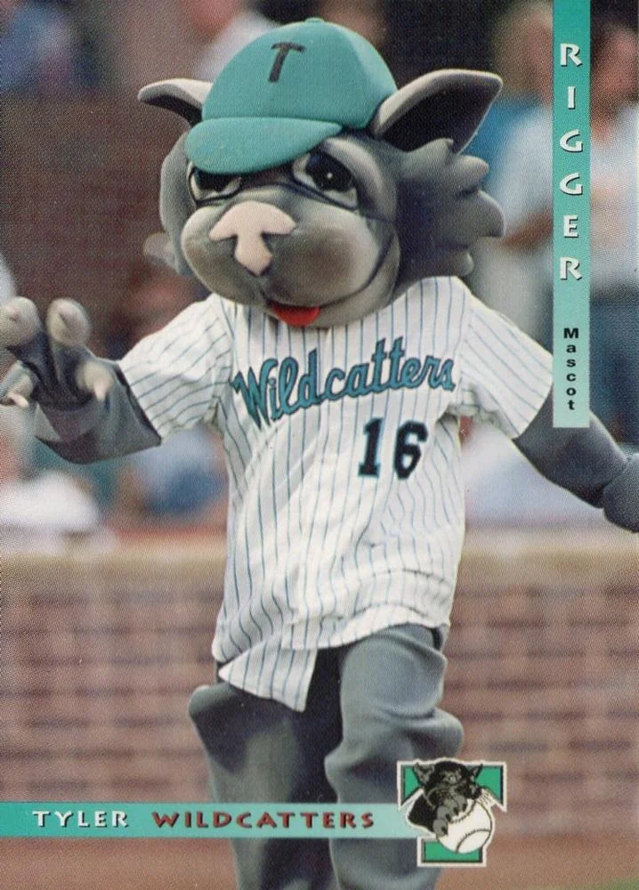

THE TYLER WILDCATTERS
WHEN PRO BASEBALL CAME BACK TO TYLER
Old School Tyler · Mike Carter Field · Texas-Louisiana League · 1994–1997
From 1994 to 1997, Tyler had its own professional baseball team. They played at Mike Carter Field, wore teal and black, had a mascot named Rigger, featured former Major League players and gave East Texas four summers of independent professional baseball.
If you lived in Tyler during the mid-1990s, you may remember them. If you didn't, here's a piece of Tyler history worth knowing.
For four seasons, the Wildcatters played professional baseball at Mike Carter Field as a charter member of the independent Texas-Louisiana League. Their arrival in 1994 was a bigger deal than it might seem today: Tyler had gone 39 years without a professional baseball team after the Tyler Tigers ceased play in 1955.
Suddenly, Tyler had a hometown professional team again.
And the Wildcatters were
very, very 1990s.
1994–97
Four seasons of independent professional baseball.
174–201
Across four Texas-Louisiana League seasons.
48–40
The 1997 team, managed by Darrell Evans. Also the last.
Mike Carter Field
Still standing in Tyler today.

The first season of professional baseball in Tyler since 1955.

A Tyler pitcher in white pinstripes and a teal cap, under the team's slogan: "Catch The Fever!"
1994 · The Return
PROFESSIONAL BASEBALL RETURNS TO TYLER
The Tyler Wildcatters were established in 1994 as one of the original teams in the new Texas-Louisiana League.
This was independent professional baseball. The Wildcatters weren't a farm team for the Texas Rangers, Houston Astros or another Major League organization. The league operated outside affiliated Minor League Baseball, giving players another place to continue their professional careers, attempt comebacks or get noticed.
Tyler played its first game on May 27, 1994, traveling to Beaumont to face the Bullfrogs. The Wildcatters lost 6–5.
A few days later, the Wildcatters played their first home game in Tyler.
Professional baseball was back.
- Years
- 1994–1997
- League
- Texas-Louisiana League
- Type
- Independent professional baseball
- Home
- Mike Carter Field
- Colors
- Teal & black
- Mascot
- Rigger WildCatter
- Overall record
- 174–201
- Best season
- 48–40 in 1997
- Final game
- August 23, 1997
The Look
THIS TEAM COULD NOT HAVE LOOKED MORE 1990s
The Wildcatters had one of those sports identities that immediately tells you what decade produced it.
Teal and black. A snarling black wildcat gripping a baseball. An aggressively stylized WildCatters wordmark.
And a mascot named Rigger WildCatter, a nod to East Texas' long connection to the oil industry.
Even better, an authentic 1995 Wildcatters souvenir program survives. Its cover shows a Tyler pitcher wearing a white pinstriped uniform with a teal cap. Across the front was the team's slogan.

Black crown, teal brim and a wildcat gripping a baseball over a teal T.
"CATCH
THE FEVER!"
You could hardly design a more perfect mid-'90s independent baseball team if you tried.
The Ballpark
THEY PLAYED AT MIKE CARTER FIELD
The Wildcatters didn't play in some long-demolished stadium that exists only in old photographs. They played at Mike Carter Field.
The historic Tyler ballpark predates the Wildcatters by decades. Construction began in 1940 as a Works Progress Administration project, and it opened in 1941 as Trojan Park, home of the Tyler Trojans. World War II kept it from hosting games until 1946. A fire nearly destroyed it in 1948, and it was renamed Mike Carter Field in 1970 in honor of Mike Carter, a John Tyler High School pitcher who died in December 1969. It was renovated again in 1991, just a few years before professional baseball returned to Tyler.
During the Wildcatters years, the park held roughly 4,000 spectators.
That means something unusual for a defunct sports team:
YOU CAN STILL VISIT
THE PLACE WHERE THE
WILDCATTERS PLAYED.
1994–1997
FOUR SUMMERS OF WILDCATTERS BASEBALL
The Wildcatters never won the Texas-Louisiana League championship, but their four seasons produced plenty of good baseball.
| Season | Record | Manager |
|---|---|---|
| 1994 | 42–46 | Bill Stein |
| 1995 | 48–52 | Wayne Krenchicki |
| 1996 | 36–63 | Dave Hilton |
| 1997 | 48–40 | Darrell Evans |
| Overall | 174–201 |
And some of the people wearing a Tyler uniform had played baseball at the highest level.
The Players
YES, MAJOR LEAGUERS PLAYED IN TYLER
That's one of the coolest parts of the Wildcatters story.
- Larry Carter had pitched for the San Francisco Giants before coming to Tyler.
- Greg Brummett had pitched for the Minnesota Twins and San Francisco Giants.
- Ken Patterson spent parts of seven Major League seasons with the Chicago White Sox, Chicago Cubs and California Angels.
- Jessie Hollins had appeared with the Chicago Cubs.
Then there's Todd Rizzo. Rizzo pitched for the Tyler Wildcatters and later made it to the Major Leagues, appearing for the Chicago White Sox in 1998 and 1999.
So Wildcatters baseball wasn't merely a collection of guys playing recreational ball on summer evenings. These were professional players. Some had already been to the majors. Others were still trying to get there.
Even Tyler's managers had impressive résumés. Bill Stein, Wayne Krenchicki and Dave Hilton had Major League playing experience.
And then came Darrell Evans.
1997 · The Manager
A MAJOR LEAGUE STAR TAKES OVER THE WILDCATTERS
Darrell Evans became Tyler's manager for the 1997 season. Baseball fans of the era would have known the name.
Evans played 21 seasons in Major League Baseball, spending time with the Atlanta Braves, San Francisco Giants and Detroit Tigers before eventually finding his way to Mike Carter Field. His 1997 Wildcatters card lists 414 career home runs, two All-Star selections and a World Series title with Detroit in 1984.
And under Evans, the Wildcatters had their best season ever.

Manager Darrell Evans at Mike Carter Field.

"#41, Manager." The 1997 season marked the beginning of his managing career.
But before that final season, Tyler had already produced one particularly memorable piece of baseball history.
June 21, 1994
THE WILDCATTERS' NO-HITTER
On June 21, 1994, just weeks into the franchise's first season, Larry Carter threw a no-hitter against the Beaumont Bullfrogs.
4–0
Tyler WildCatters vs. Beaumont Bullfrogs · Larry Carter, no-hitter
It remains the only known no-hitter in Wildcatters history.
Beaumont actually bookends part of the early Wildcatters story. The Bullfrogs had hosted Tyler's first-ever game less than a month earlier. Now Carter had no-hit them.
Carter did double duty that first season. His 1994 Wildcatters card lists him as both a pitcher and the team's pitching coach.

Larry Carter, "Pitch/Coach," at Mike Carter Field.
Card scan: Trading Card Database

"Larry G. Carter · Pitching Coach." The back notes his partial season with the San Francisco Giants.
Card scan: Trading Card Database
1997
THE BEST WILDCATTERS TEAM
The final Tyler Wildcatters team was also the best. Evans' club finished 48–40, the franchise's only winning season.
And Tyler had some serious individual performances.
Batting average, with 13 home runs.
A league-leading 29 home runs and 87 RBI. Shared the Texas-Louisiana League's Most Valuable Player award.
The league's best ERA. Shared the league's top pitching award.
The Wildcatters stayed in the playoff race until they were eliminated on the season's final day.
People were showing up, too. Reported attendance reached 71,435 in 1997, the largest total in franchise history. StatsCrew calculates an average of approximately 1,624 fans per game.
The Wildcatters were winning. Attendance was up. Two Tyler players shared the league's biggest individual awards.
It should have been the beginning of something.
Instead, it was the end.
August 1997
THEIR BEST SEASON WAS ALSO THEIR LAST
Behind the scenes, the Wildcatters were in serious financial trouble.
Historical accounts based on contemporary Tyler newspaper reporting indicate that the operation had accumulated more than $1 million in losses during its first three seasons.
By August 1997, with only nine games remaining, most of the Tyler staff, including grounds personnel, were laid off. Local vendors were reportedly owed money and beginning legal action.
That makes the Wildcatters' demise stranger than simply saying Tyler stopped supporting baseball. The team was drawing its largest reported attendance ever while playing its best baseball ever. But the business underneath it was falling apart.
The Wildcatters played their final game on August 23, 1997. Tyler defeated the Lubbock Crickets:
7–5
Final game · August 23, 1997 · vs. Lubbock Crickets
The Wildcatters finished their best season 48–40. And then they were gone.
THEIR BIGGEST CROWDS. THEIR BEST BASEBALL.
THEIR LAST SEASON.
What Survives
THE WILDCATTERS LEFT SOME PRETTY COOL STUFF BEHIND
Fortunately, the Wildcatters haven't completely disappeared. Programs, photographs, baseball cards and other memorabilia still survive.
There were Wildcatters card sets during the team's existence, including a 1997 set from Grandstand.
There's even a baseball card featuring Rigger, the Wildcatters mascot: a gray wildcat in a teal T cap and a pinstriped #16 jersey.
Fans have also held onto inaugural-season cards, caps and other pieces of Wildcatters memorabilia.
For a team that disappeared nearly three decades ago, quite a bit of it is still out there.

The Wildcatters' mascot got his own baseball card.
Before 1994
THE TROJANS AND THE TIGERS
Long before the Wildcatters, the ballpark had another name and another team. It opened in 1941 as Trojan Park, built for the Tyler Trojans.
The Trojans were Tyler's longtime minor league club. They played on and off from 1924 to 1950 in the East Texas League, the Lone Star League and the West Dixie League, and won East Texas League championships in 1924, 1938 and 1940.
World War II delayed the new park's debut. The Trojans finally played their first season at Trojan Park in 1946.
Two years later, on August 6, 1948, a fire nearly destroyed the place, taking the main grandstand, the dressing rooms and the concession stand. The park was patched back together fast enough for the Trojans to play at home again on August 17.
Around 1950, the Trojans gave way to the Tyler East Texans, who were followed by the Tyler Tigers of the Big State League.
The Tigers didn't make it through the 1955 season. Their last game came on June 29, 1955, and when they stopped playing, Tyler went without professional baseball for 39 years.
That's the gap the Wildcatters filled.
After 1997
THE WILDCATTERS WEREN'T THE END OF BASEBALL IN TYLER
Tyler's experiment with hometown baseball didn't end in 1997.
Four years later, independent professional baseball returned to Mike Carter Field with the Tyler Roughnecks. The Roughnecks played in the All-American Association in 2001, but their run was even shorter than the Wildcatters'. Both the team and the fledgling league lasted only one season.
And today, Tyler once again has a hometown baseball team: the Tyler Knockouts, a collegiate summer wood-bat team in the Cowboy Collegiate League that began play at Mike Carter Field in 2026. When the team was announced, its general manager called it the closest thing to professional baseball in Tyler "since the Tyler Wildcatters."
The Knockouts aren't a continuation of the Wildcatters franchise, and the Wildcatters shouldn't be confused with today's team. But they're part of the same broader Tyler baseball story.
And there's one thing tying those different eras together: Mike Carter Field.
- 1940–1941
Trojan Park is built
Construction on a new Works Progress Administration ballpark begins in June 1940, and it opens in 1941. World War II keeps it from hosting games for five years.
- 1946
The Trojans move into Trojan Park
Professional baseball returns after the war, and the Trojans play their first season in the new park.
- 1948
The fire
On August 6, fire nearly destroys Trojan Park, taking the main grandstand, dressing rooms and concession stand. The Trojans are back home by August 17.
- 1955
Tyler Tigers
After the Trojans give way to the East Texans and then the Tigers, the Tigers' final season leaves Tyler without professional baseball.
- 1970
Mike Carter Field
The ballpark is renamed for Mike Carter, a John Tyler High School pitcher who died in December 1969.
- 1994–1997
The Wildcatters era
Professional baseball returns after a 39-year absence: four seasons of independent baseball at Mike Carter Field, ending with the best season in team history.
- 2001
Tyler Roughnecks
Independent professional baseball returns to Mike Carter Field for one season.
- 2026
Tyler Knockouts
Collegiate summer baseball brings a new generation of Tyler baseball to Mike Carter Field.
Remember Them?
REMEMBER THE TYLER WILDCATTERS?
The Wildcatters existed for only four seasons. That's probably why someone can live in Tyler today and have absolutely no idea they ever existed.
But for four summers, you could drive to Mike Carter Field and watch professional baseball in Tyler, Texas.
- There were former Major Leaguers on the field.
- A future Major Leaguer passed through town.
- A pitcher threw a no-hitter.
- A 21-year Major League veteran managed the team.
- There was teal everywhere.
- There was a wildcat named Rigger.
And in their final season, the Wildcatters played their best baseball in front of their biggest crowds, right before disappearing.
THE TEAM IS GONE.
THE BALLPARK IS STILL HERE.
And the Wildcatters are still a pretty cool piece of Tyler history.
Do you remember them?
If you attended a Wildcatters game, worked for the team, played for the team, have old photographs or still have Wildcatters memorabilia sitting in a closet somewhere, we'd love to hear from you.
There are almost certainly pieces of this story still sitting in photo albums, shoeboxes and closets around East Texas. And we'd like to help preserve them.
Sources & Research Notes
WHERE THE STORY COMES FROM
This Old School Tyler entry was assembled from surviving Wildcatters programs and cards, baseball reference databases and historical accounts based on contemporary Tyler newspaper reporting.
- Tyler WildCatters programs and cardsThe 1994 inaugural season program, the 1995 "Catch The Fever!" souvenir program, the 1994 Larry Carter card, the Rigger mascot card and the 1997 Grandstand Darrell Evans card.
- Trading Card Database — Tyler Wildcatters card gallerySource of the baseball card scans on this page.
- Fun While It Lasted — 1995 Tyler Wildcatters programCharter membership, the first game at Beaumont, 1997 awards, the more-than-$1-million deficit, the August 1997 layoffs and the final game against Lubbock.
- Wikipedia — Tyler WildCattersThe 39-year gap, team colors, Rigger WildCatter, season-by-season managers and the Larry Carter no-hitter.
- StatsCrew — Tyler Wildcatters team historySeason records and 1997 attendance of 71,435 (about 1,624 per game).
- StatsCrew — 1997 Texas-Louisiana League leadersSean Collins, Chris Cassels and Ray Davis.
- The Drumbeat — Mike Carter FieldConstruction as a WPA project in 1940, the 1941 opening as Trojan Park, the Trojans' first season there in 1946, the 1948 fire and the 1970 renaming.
- Jarah Wright — "Mike Carter Field set to turn 75" (November 3, 2014)Mike Carter, the John Tyler High School pitcher the park is named for, and the teams that played there.
- Tyler Morning Telegraph — "Baseball had ups, downs in East Texas" (March 8, 2015)The Trojans' 1924, 1938 and 1940 titles, the August 6, 1948 fire, and the East Texans and Tigers.
- Visit Tyler — Mike Carter FieldThe 1948 and 1991 renovations.
- Wikipedia — Darrell Evans21 Major League seasons (1969–1989), 414 home runs, the 1984 World Series.
- Wikipedia — Tyler TrojansThe Trojans' leagues and seasons, 1924–1950.
- Wikipedia — Tyler TigersThe Big State League Tigers, whose last game was June 29, 1955.
- Fun While It Lasted — Tyler RoughnecksThe 2001 All-American Association season at Mike Carter Field.
- Tyler Morning Telegraph — Tyler Knockouts bringing summer baseball to Mike Carter (April 2, 2026)
FAQ
FREQUENTLY ASKED QUESTIONS
The Tyler WildCatters were an independent professional baseball team that played in the Texas-Louisiana League from 1994 through 1997. They brought professional baseball back to Tyler for the first time since the Tyler Tigers stopped playing in 1955.
The WildCatters played at Mike Carter Field in Tyler, Texas. The ballpark opened in 1941 as Trojan Park, a Works Progress Administration project, was renamed Mike Carter Field in 1970 and is still in use today.
The ballpark opened in 1941 as Trojan Park, home of the Tyler Trojans, who played their first season there in 1946. The Tyler East Texans and then the Tyler Tigers followed. The Tigers stopped playing in June 1955, and Tyler had no professional baseball again until the WildCatters arrived in 1994.
Bill Stein managed the team in 1994, Wayne Krenchicki in 1995, Dave Hilton in 1996 and Darrell Evans in 1997. All four had played in the Major Leagues. Evans, a 21-year Major League veteran with 414 home runs, led the 1997 team to a 48–40 record, the franchise's only winning season.
Yes. Larry Carter, Greg Brummett, Ken Patterson and Jessie Hollins had all played in the Major Leagues, and Todd Rizzo later pitched for the Chicago White Sox in 1998 and 1999. Larry Carter threw the only known no-hitter in team history on June 21, 1994.
The team lost more than $1 million over its first three seasons. In August 1997, with nine games left, most of the staff was laid off and local vendors were reportedly owed money. The WildCatters played their last game on August 23, 1997, finishing their best season at 48–40 with their largest attendance ever.
Both spellings appear in period materials. The 1995 souvenir program cover and the Wikipedia article use "WildCatters," while the fronts of the 1997 Grandstand cards and several baseball databases use "Wildcatters."
No. The Tyler Knockouts are a collegiate summer wood-bat team that began play at Mike Carter Field in 2026. They are not a continuation of the WildCatters franchise, but they play in the same ballpark.
More forgotten logos, lost teams, unusual places and pieces of Tyler history that deserve another look. See also the Tyler Crude, Tyler's football team that never played, and the Eisenhower International Golf Classic.